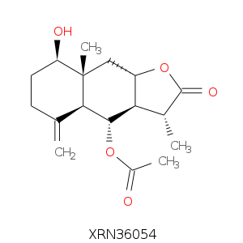

화합물 검색하기
search
e.g KINP-C0123456K , Dibromomethane
| chemical ID | source DB | chemical name | IUPAC name | molecular formula | standard inchi key | Lipinski failure | canonical smiles | |
|---|---|---|---|---|---|---|---|---|
| KINP-N0123456K | NPASS : NPC100742 | 8-acetyl-3,4-dihydroxy-5,7-dimethoxy-2,2-dimethylchroman | dibromomethanes | C15H20O6 | FNBRRJMBTVMTJT-UHFFFAOYSA-N | 1 | COc1cc(OC)c(C(=O)C)c2OC(C)(C)C(O)C(O)c12 |
| rotatable bond | rings | heavy atom | molecular weight | AlogP | hydrogen bond acceptor | hydrogen bond donor | polar surface area | external ID | |
|---|---|---|---|---|---|---|---|---|---|
| 3 | 2 | 21 | 296.32 | 0.835 | 4 | 2 | 85.22 |
PubChem CID : 339903
chEMBL ID : CHEMBLE1551957 ZINC ID : ZINC000031771977 |
structure


SDF DOWNLOAD

8-acetyl-3,4-dihydroxy-5,7-dimethoxy-2,2-dimethylchroman
가 포함된 천연물
검색하신 화합물
8-acetyl-3,4-dihydroxy-5,7-dimethoxy-2,2-dimethylchroman
가 포함된46
개의 천연물이 발견되었습니다.|
organism ID |
organism name |
organism tax level |
organism tax ID |
ref info |
ref info type |
comment |
||
|---|---|---|---|---|---|---|---|---|
| KINP-N0123456K | 천연물 정보보기 |
Astragalus flexuosus | Species | 1234496 | 73628026; Article; Wang, Lei; Qin, Wen; Tian, Li; Zhang, Xue-Xue; Lin, Fang; Cheng, Fan; Chen, Jian-Feng; Liu, Cheng-Xiong; Guo, Zhi-Yong; Proksch, Peter; Zou, Kun; Fitoterapia; vol. 127; (2018); p. 349 - 355; | Reaxys | whole plant of Carpesium abrotanoides L. (Compositae); collected in Changyangin, Hubei Province, China | |
| KINP-N0123456K | 천연물 정보보기 |
Astragalus flexuosus | Species | 1234496 | 73628026; Article; Wang, Lei; Qin, Wen; Tian, Li; Zhang, Xue-Xue; Lin, Fang; Cheng, Fan; Chen, Jian-Feng; Liu, Cheng-Xiong; Guo, Zhi-Yong; Proksch, Peter; Zou, Kun; Fitoterapia; vol. 127; (2018); p. 349 - 355; | Reaxys | whole plant of Carpesium abrotanoides L. (Compositae); collected in Changyangin, Hubei Province, China | |
| KINP-N0123456K | 천연물 정보보기 |
Astragalus flexuosus | Species | 1234496 | 73628026; Article; Wang, Lei; Qin, Wen; Tian, Li; Zhang, Xue-Xue; Lin, Fang; Cheng, Fan; Chen, Jian-Feng; Liu, Cheng-Xiong; Guo, Zhi-Yong; Proksch, Peter; Zou, Kun; Fitoterapia; vol. 127; (2018); p. 349 - 355; | Reaxys | whole plant of Carpesium abrotanoides L. (Compositae); collected in Changyangin, Hubei Province, China | |
| KINP-N0123456K | 천연물 정보보기 |
Astragalus flexuosus | Species | 1234496 | 73628026; Article; Wang, Lei; Qin, Wen; Tian, Li; Zhang, Xue-Xue; Lin, Fang; Cheng, Fan; Chen, Jian-Feng; Liu, Cheng-Xiong; Guo, Zhi-Yong; Proksch, Peter; Zou, Kun; Fitoterapia; vol. 127; (2018); p. 349 - 355; | Reaxys | whole plant of Carpesium abrotanoides L. (Compositae); collected in Changyangin, Hubei Province, China | |
| KINP-N0123456K | 천연물 정보보기 |
Astragalus flexuosus | Species | 1234496 | 73628026; Article; Wang, Lei; Qin, Wen; Tian, Li; Zhang, Xue-Xue; Lin, Fang; Cheng, Fan; Chen, Jian-Feng; Liu, Cheng-Xiong; Guo, Zhi-Yong; Proksch, Peter; Zou, Kun; Fitoterapia; vol. 127; (2018); p. 349 - 355; | Reaxys | whole plant of Carpesium abrotanoides L. (Compositae); collected in Changyangin, Hubei Province, China |
화합물별 타겟 활성정보
문헌
검색하신 화합물
Astragalus flexuosus
과 연관된115
개의 타겟 활성정보입니다.|
target ID |
UniProt ID |
target type |
target name |
activity property |
activity type |
activity relation |
activity value |
activity units |
assay organism |
assay tax ID |
ref info |
ref info type |
||
|---|---|---|---|---|---|---|---|---|---|---|---|---|---|---|
| KINP-T0123456K | 타겟 정보보기 |
O75496 | Cell Line | peritoneum cell | In Vitro (Efficacy) | IC50 | <= | 19.5 | muM | sars coronavirus | 1906665 | 63190995; Article; Luyen, Bui Thi Thuy; Tai, Bui Huu; Thao, Nguyen Phuong; Eun, Kim Ji; Cha, Ji Yun; Xin, Ming Jie; Lee, Young Mi; Kim, Young Ho; Bioorganic and Medicinal Chemistry Letters; vol. 24; 8; (2014); p. 1895 - 1900; | Bioassay : FBS: fetal bovine serum; camptotherin (IC50 0.05 mug/ml), tamoxijen citrate (IC50 10.0 mug/ml) and VP-16 (etoposide) (IC50: 1.9 mug/ml) used as reference freshly trypsinized cell suspension in RPMI-1640 supplemented with FBS seeded in plates (1.5E3 - 7.5E3 cells per well), title comp. added, incubated for 3 d; cells fixed with CF3COOH, stained with sulforhodamine B; cells counted using UV control | |
| KINP-T0123456K | 타겟 정보보기 |
O75496 | Cell Line | peritoneum cell | In Vitro (Efficacy) | IC50 | <= | 19.5 | muM | sars coronavirus | 1906665 | 63190995; Article; Luyen, Bui Thi Thuy; Tai, Bui Huu; Thao, Nguyen Phuong; Eun, Kim Ji; Cha, Ji Yun; Xin, Ming Jie; Lee, Young Mi; Kim, Young Ho; Bioorganic and Medicinal Chemistry Letters; vol. 24; 8; (2014); p. 1895 - 1900; | Bioassay : FBS: fetal bovine serum; camptotherin (IC50 0.05 mug/ml), tamoxijen citrate (IC50 10.0 mug/ml) and VP-16 (etoposide) (IC50: 1.9 mug/ml) used as reference freshly trypsinized cell suspension in RPMI-1640 supplemented with FBS seeded in plates (1.5E3 - 7.5E3 cells per well), title comp. added, incubated for 3 d; cells fixed with CF3COOH, stained with sulforhodamine B; cells counted using UV control | |
| KINP-T0123456K | 타겟 정보보기 |
O75496 | Cell Line | peritoneum cell | In Vitro (Efficacy) | IC50 | <= | 19.5 | muM | sars coronavirus | 1906665 | 63190995; Article; Luyen, Bui Thi Thuy; Tai, Bui Huu; Thao, Nguyen Phuong; Eun, Kim Ji; Cha, Ji Yun; Xin, Ming Jie; Lee, Young Mi; Kim, Young Ho; Bioorganic and Medicinal Chemistry Letters; vol. 24; 8; (2014); p. 1895 - 1900; | Bioassay : FBS: fetal bovine serum; camptotherin (IC50 0.05 mug/ml), tamoxijen citrate (IC50 10.0 mug/ml) and VP-16 (etoposide) (IC50: 1.9 mug/ml) used as reference freshly trypsinized cell suspension in RPMI-1640 supplemented with FBS seeded in plates (1.5E3 - 7.5E3 cells per well), title comp. added, incubated for 3 d; cells fixed with CF3COOH, stained with sulforhodamine B; cells counted using UV control | |
| KINP-T0123456K | 타겟 정보보기 |
O75496 | Cell Line | peritoneum cell | In Vitro (Efficacy) | IC50 | <= | 19.5 | muM | sars coronavirus | 1906665 | 63190995; Article; Luyen, Bui Thi Thuy; Tai, Bui Huu; Thao, Nguyen Phuong; Eun, Kim Ji; Cha, Ji Yun; Xin, Ming Jie; Lee, Young Mi; Kim, Young Ho; Bioorganic and Medicinal Chemistry Letters; vol. 24; 8; (2014); p. 1895 - 1900; | Bioassay : FBS: fetal bovine serum; camptotherin (IC50 0.05 mug/ml), tamoxijen citrate (IC50 10.0 mug/ml) and VP-16 (etoposide) (IC50: 1.9 mug/ml) used as reference freshly trypsinized cell suspension in RPMI-1640 supplemented with FBS seeded in plates (1.5E3 - 7.5E3 cells per well), title comp. added, incubated for 3 d; cells fixed with CF3COOH, stained with sulforhodamine B; cells counted using UV control | |
| KINP-T0123456K | 타겟 정보보기 |
O75496 | Cell Line | peritoneum cell | In Vitro (Efficacy) | IC50 | <= | 19.5 | muM | sars coronavirus | 1906665 | 63190995; Article; Luyen, Bui Thi Thuy; Tai, Bui Huu; Thao, Nguyen Phuong; Eun, Kim Ji; Cha, Ji Yun; Xin, Ming Jie; Lee, Young Mi; Kim, Young Ho; Bioorganic and Medicinal Chemistry Letters; vol. 24; 8; (2014); p. 1895 - 1900; | Bioassay : FBS: fetal bovine serum; camptotherin (IC50 0.05 mug/ml), tamoxijen citrate (IC50 10.0 mug/ml) and VP-16 (etoposide) (IC50: 1.9 mug/ml) used as reference freshly trypsinized cell suspension in RPMI-1640 supplemented with FBS seeded in plates (1.5E3 - 7.5E3 cells per well), title comp. added, incubated for 3 d; cells fixed with CF3COOH, stained with sulforhodamine B; cells counted using UV control |
예측
검색하신 화합물
Astragalus flexuosus
와 연관점수가 높은32
개의 타겟 활성정보입니다.|
target ID |
UniProt ID |
associate score |
target type |
target name |
activity property |
activity type |
activity relation |
activity value |
activity units |
ref info |
ref info type |
|||
|---|---|---|---|---|---|---|---|---|---|---|---|---|---|---|
| KINP-T0123456K | 타겟 정보보기 |
O75496 | 0.99 | Cell Line | peritoneum cell | In Vitro (Efficacy) | IC50 | <= | 19.5 | muM | 63190995; Article; Luyen, Bui Thi Thuy; Tai, Bui Huu; Thao, Nguyen Phuong; Eun, Kim Ji; Cha, Ji Yun; Xin, Ming Jie; Lee, Young Mi; Kim, Young Ho; Bioorganic and Medicinal Chemistry Letters; vol. 24; 8; (2014); p. 1895 - 1900; | Bioassay : FBS: fetal bovine serum; camptotherin (IC50 0.05 mug/ml), tamoxijen citrate (IC50 10.0 mug/ml) and VP-16 (etoposide) (IC50: 1.9 mug/ml) used as reference freshly trypsinized cell suspension in RPMI-1640 supplemented with FBS seeded in plates (1.5E3 - 7.5E3 cells per well), title comp. added, incubated for 3 d; cells fixed with CF3COOH, stained with sulforhodamine B; cells counted using UV control | more ref 9 건 |
|
| KINP-T0123456K | 타겟 정보보기 |
O75496 | 0.99 | |||||||||||
| KINP-T0123456K | 타겟 정보보기 |
O75496 | 0.99 | |||||||||||
| KINP-T0123456K | 타겟 정보보기 |
O75496 | 0.99 | |||||||||||
| KINP-T0123456K | 타겟 정보보기 |
O75496 | 0.99 | Cell Line | peritoneum cell | In Vitro (Efficacy) | IC50 | <= | 19.5 | muM | 63190995; Article; Luyen, Bui Thi Thuy; Tai, Bui Huu; Thao, Nguyen Phuong; Eun, Kim Ji; Cha, Ji Yun; Xin, Ming Jie; Lee, Young Mi; Kim, Young Ho; Bioorganic and Medicinal Chemistry Letters; vol. 24; 8; (2014); p. 1895 - 1900; | Bioassay : FBS: fetal bovine serum; camptotherin (IC50 0.05 mug/ml), tamoxijen citrate (IC50 10.0 mug/ml) and VP-16 (etoposide) (IC50: 1.9 mug/ml) used as reference freshly trypsinized cell suspension in RPMI-1640 supplemented with FBS seeded in plates (1.5E3 - 7.5E3 cells per well), title comp. added, incubated for 3 d; cells fixed with CF3COOH, stained with sulforhodamine B; cells counted using UV control | more ref 10 건 |
peritoneum cell
와 연관된 질병
선택된 타겟과 연관된
61
개의 질병이 발견되었습니다.|
disease ID |
disease name |
disease code |
external DB |
disease score |
||
|---|---|---|---|---|---|---|
| KINP-D0123456K | 질병 정보보기 |
Acute myeloid leukaemia | ICD-11: 2A60 | TTD | ||
| KINP-D0123456K | 질병 정보보기 |
Acute myeloid leukaemia | ICD-11: 2A60 | TTD | ||
| KINP-D0123456K | 질병 정보보기 |
Acute myeloid leukaemia | ICD-11: 2A60 | TTD | ||
| KINP-D0123456K | 질병 정보보기 |
Acute myeloid leukaemia | ICD-11: 2A60 | TTD | ||
| KINP-D0123456K | 질병 정보보기 |
Acute myeloid leukaemia | ICD-11: 2A60 | TTD |